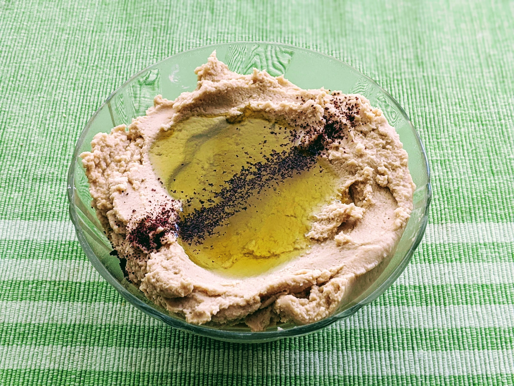

Houmous facile

Pour un petit saladier de houmous (6-8 personnes, facile) :
- Deux boîtes de conserve de pois chiches (400g non égouttées)
- Deux citrons
- Deux gousses d'ail
- Trois cuillères à soupe de tahiné
- Verser les pois chiches avec leur jus dans une casserole. Faire chauffer à feu moyen-fort jusqu'à ce que ça bouille.
- Pendant ce temps, éplucher et écraser l'ail, récupérer le jus des citrons.
- Récupérer les pois chiches avec une écumoire (ne pas jeter le jus de cuisson !), les mixer avec l'ail.
- Ajouter le jus de citron, le tahiné, puis tout ou partie du jus de cuisson des poix chiches, continuer à mixer. Il faut que ça forme une pâte homogène et pas trop compacte, typiquement si on creuse un trou dedans la surface doit se reformer rapidement.
- Mettre deux heures (au moins) au frigo, servir 15-20 minutes après l'avoir sorti du frigo, le refroidissement devrait rendre le houmous plus compact. Présenter le houmous avec arrosé d'huile d'olive et parsemé de persil, de sumac, ou de pignons de pin toastés.
Remarque : ça arrive que le mixeur ne parvienne pas à mixer les pois chiches lorsque ça devient trop pâteux — ajouter simplement un peu de jus de cuisson et ça devrait se débloquer.
Variante : si on veut être plus fancy, on peut faire ça avec des pois chiches secs que l'on fait tremper une nuit, puis que l'on fait cuire environ une heure et demie (jusqu'à ce qu'ils soient suffisamment ramollis pour pouvoir être écrasés avec les doigts facilement). C'est encore meilleur si l'on enlève les petites peaux transparentes autour de chaque pois chiche, la meilleure méthode que je connais pour ça est de frotter ensemble les pois chiches au fond d'une casserole d'eau froide, et de récupérer les petites peaux qui flottent à la surface. Pas besoin de s'embêter à tout enlever minutieusement, l'idée est de réduire leur quantité, pas de les éliminer complètement.